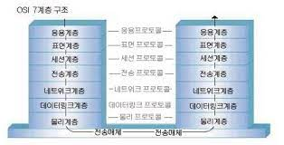

- OSI 참조모델 :
국제표준화기구(ISO)에서 개발한 모델로, 컴퓨터 네트워크 프로토콜 디자인과 통신을 계층으로 나누어 설명한 것이다.
일반적으로 OSI 7 계층이라고 한다.
- TCP/IP 모델 :
인터넷에서 컴퓨터들이 서로 정보를 주고받는 데 쓰이는 통신규약(프로토콜)의 모음이다.
- LAN : local area network
근거리 통신망, 로컬 영역 네트워크(영어: local area network, LAN), 구내 정보 통신망은 네트워크 매체를 이용하여
- WAN : wide area network
드넓은 지리적 거리/장소를 넘나드는 통신 네트워크 또는 컴퓨터 네트워크이다. 광역 통신망은 종종 전용선과 함께 구성된다.
- MAC : Media Access Control
자료 전송 프로토콜의 하부 계층이며 일곱 계층의 OSI 모델에 규정된 데이터 링크 계층의 일부이다.
- NIC : network interface controller
컴퓨터를 네트워크에 연결하여 통신하기 위해 사용하는 하드웨어 장치이다.
- 이더넷 : Ethernet
컴퓨터 네트워크 기술의 하나로, 일반적으로 LAN, MAN 및 WAN에서 가장 많이 활용되는 기술 규격이다